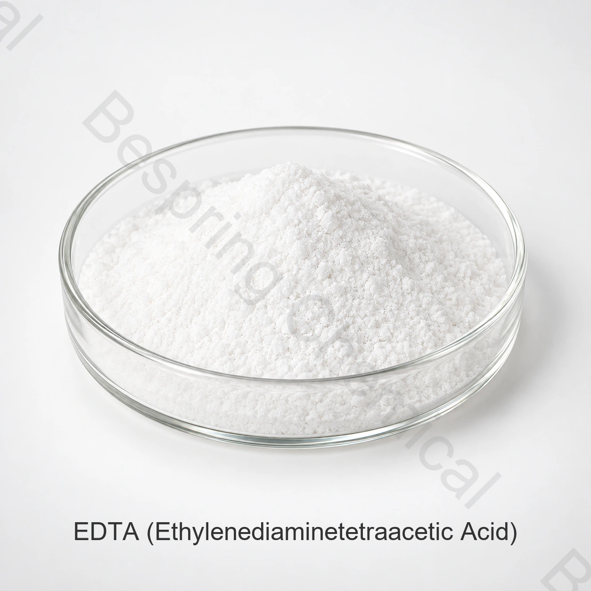

正確なEDTA塩を指定する
具体的な塩、CAS番号またはINS番号、用途、数量および仕向地市場を明記してください。
食品用原料 · キレート・金属イオン封鎖系 · EDTA
EDTAは、エチレンジアミン四酢酸とその塩の総称です。食品用途での調達では、具体的な化合物を特定する必要があります。EDTAカルシウム二ナトリウムはINS 385、EDTA二ナトリウムはINS 386です。遊離EDTA酸を、いずれの塩とも同じものとして置き換えてはなりません。

EDTAの参考サンプル。対象の食品用途に使用する具体的なEDTA塩を確認してください。
製品画像 · 注文時にグレードと包装を確認してください
正確なグレード、用途、数量、包装、仕向地および必要な資料をお知らせください。
グレード食品用。供給元ごとの適格性評価が必要です。
仕様書最新資料は営業担当から入手できます
包装供給元別の提案で確認
ロットの証拠資料供給ロットの最新COAを入手できます
製品概要
EDTAは、エチレンジアミン四酢酸とその塩の総称です。食品用途での調達では、具体的な化合物を特定する必要があります。EDTAカルシウム二ナトリウムはINS 385、EDTA二ナトリウムはINS 386です。遊離EDTA酸を、いずれの塩とも同じものとして置き換えてはなりません。
商業上の適合性は、実際の供給元、目的の機能、食品製造の全工程および仕向地市場の規則によって異なります。注文に適用するグレード別仕様に合意し、ロットCOAを受入判定に使用してください。
調達チェックリスト
サンプルの請求や注文の前に、供給グレード、用途要件および取引条件を比較してください。
具体的な塩、CAS番号またはINS番号、用途、数量および仕向地市場を明記してください。
INS 385では、CAS 62-33-9および使用が認められた対象食品カテゴリーを確認してください。
INS 386ではCAS 139-33-3を確認し、EDTAカルシウム二ナトリウムの代わりに使用しないでください。
対象の金属管理目的、配合、工程および目標保存期間を裏付けるデータをお知らせください。
用途の事前評価
仕向地市場で認められた用途を選び、最終食品中で性能を評価してください。
酸化、色または安定性に影響し得る微量金属の封鎖作用を評価してください。
使用が認められた正確なEDTA塩を、検証済み配合の一成分として評価してください。
原料選定と、酸素、光、包装および工程の管理を組み合わせてください。
対象食品と市場で認められた具体的な塩と使用量のみを使用してください。
技術的な選択
見積依頼には、EDTAカルシウム二ナトリウム、EDTA二ナトリウムまたは他の具体的な化合物を明記し、「EDTA」だけの記載にしないでください。
CAS番号とINS番号を塩に合わせてください。遊離酸と塩は物質の同定情報が異なります。
EDTAの使用許可は、食品カテゴリーと法域によって異なります。配合前に確認してください。
金属イオン封鎖剤で対処する金属イオンまたは安定性の問題を定めてください。
技術資料
Bespring Chemicalは、この原料の製品仕様をオンラインで公開していません。営業担当に供給元別の最新仕様書またはTDSを請求し、その改訂版、試験方法および受入基準がお客様の購入要件に合致することを確認してください。
最新の署名済み仕様書またはTDS、SDS、分析方法、代表COAおよびロットCOAを請求してください。
正確なグレードと供給元について、該当する食品安全、品質、原産地、アレルゲン、コーシャ、ハラールおよび製造拠点の証明書を確認してください。
次の Codex GSFAのEDTAカルシウム二ナトリウム記録を確認し、対象の最終食品に仕向地市場の現行規則を適用してください。
適合性に関する注意： 国際的な物質同定資料だけで、あらゆる用途が認められるわけではありません。購入者は、仕向地市場ごとに食品カテゴリー、使用量、表示およびその他の要件を確認する責任があります。
保管と取扱い
購入者からの質問
EDTAは、エチレンジアミン四酢酸とその塩の総称です。食品用途での調達では、具体的な化合物を特定する必要があります。EDTAカルシウム二ナトリウムはINS 385、EDTA二ナトリウムはINS 386です。遊離EDTA酸を、いずれの塩とも同じものとして置き換えてはなりません。供給には、選択した供給元の最新の署名済み仕様書が適用されます。
具体的なEDTA塩を確認する必要があります。INS番号は塩によって異なり、EDTA化合物は供給元別に確認します。名称が物質群や混合物を含む場合は、承認前に具体的な物質と組成を確認してください。
供給グレードについて、最新の仕様書またはTDS、該当する試験方法および入手可能なCOA資料を請求してください。注文前に、合意した品質要件を確認してください。
実際の供給元について、最新の仕様書またはTDS、SDS、代表COA、ロットCOA、および該当する食品安全、原産地、アレルゲン、コーシャ、ハラールその他の証明書を請求してください。
正確なグレードまたは種類、用途、重要な性能要件、数量、包装、仕向地市場、必要な資料、インコタームズおよび希望納期をお知らせください。
関連する調達
製品群全体と、入手可能な製品技術資料をご覧ください。
製品仕様、資料、サンプルおよび取引上の要件をご相談ください。
海外向け原料調達のための調達・輸出支援をご確認ください。
仕様に基づく調達
適切な提案のため、正確なグレードまたは種類、用途、重要な性能要件、数量、包装、仕向地および資料一覧をお知らせください。
ご注文で提供できる資料を確認するため、必要なグレードと仕向地市場をお知らせください。
外部参照は、バッチ証明書または Bespring 製品仕様ではありません。